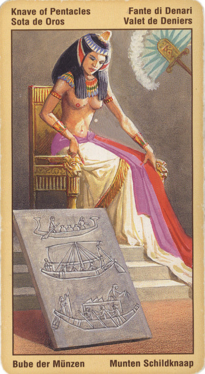

Принцесса Пентаклей (Валет)
Он же Вестник, Паж Пентаклей.
К типу людей, на которых указывает эта карта, относятся студенты или другие люди, занятые учебой или созидательным трудом.
В раскладе – шанс, возможность приобрести знания, то есть обычно поступление в учебное заведение или успешная учеба.
Речь может идти о выгодной сделке, о новой перспективной работе, просто о жизненном опыте или неожиданном, но очень благоприятном выходе из создавшегося положения. Эта карта всегда указывает на нечто вещественное, прочное, каковы бы ни были предлагаемые ею шансы и варианты.
Принцесса пентаклей стремится быть в курсе всех событий, не отставать, желает быть осведомленным. Часто указывает на личность, являющуюся носителем новостей, в худшем случае, сплетен.
Если эта карта выпала в личном раскладе, вы как раз готовитесь выйти из-под чужой опеки и зажить собственной жизнью. И прежде всего это относится к материальной (денежной) сфере.
Появление данной карты в соседстве с принцессой кубков предсказывает удачный путь вверх: вы либо сделаете хорошую карьеру, либо обретете поддержку интересующих вас людей, либо найдете высокооплачиваемую работу, - в зависимости от того, что вам нужно на данный момент.
При раскладе на ситуацию принцесса пентаклей дает понять, что, действуя старыми методами, вы вряд ли добьетесь успеха и достигнете намеченных целей. Только с помощью новых людей и новых идей вы придете к осуществлению задуманного.
Карта хороших новостей, роскоши, амбиций, начала карьеры.
В перевернутом положении – упущенный шанс, «учеба» на своих ошибках.
Принцесса Пентаклей в перевернутом положении может свидетельствовать о небольших финансовых потерях.
Нередко эта карта символизирует просто суетного человека. Связавшись с ним, вы рискуете материальными потерями.
Отрицательное значение карты: личность грубая, банальная, самовлюбленная, растратчик. Человек, которому лучше не одалживать денег- не вернет. Самозванец. Распутство, нездоровье, плохие вести.